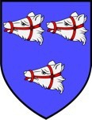

Antavla
187785 Lady Agnes Forbes
Blev ca 66 år.

Far:
Alexander Forbes 2nd of Pitsligo & Kynnaldy (1425 - 1477)
Mor:
Maria "Jane" Hay of Erroll (1427? - 1470?)
Född:
omkring 1460 Pitsligo, Aberdeenshire.Scotland.
[1]
Död:
1526.
[1]
Barn med
187784 Sir John Alexandersson Mowat av Loscragie and Freswick (1440? - 1512?)
Barn:
Magnus Mowatt av Balquholly och Loscragy (1489 - 1526)
Personhistoria
Årtal
Ålder
Händelse
1460?
Födelse omkring 1460 Pitsligo, Aberdeenshire.Scotland
[1]
1470?
Modern
375571 Lady Maria "Jane" Hay of Erroll
dör omkring 1470 Pitsligo, Aberdeenshire.Scotland
1477
Fadern
375570 Sir Knight Alexander Forbes 2nd of Pitsligo & Kynnaldy
dör 1477-03 Pitsligo, Aberdeenshire.Scotland
[2]
1489
Sonen
93892 Magnus Mowatt av Balquholly och Loscragy
föds 1489 Balquholly, Banffshire, Scotland
1511?
Barnbarnet
46946 1st Laird of Balquholly Patrick Mowat
föds omkring 1511 Balquholly, Banffshire, Scotland
1512?
Partnern
187784 Sir John Alexandersson Mowat av Loscragie and Freswick
dör omkring 1512
1526
Död 1526
[1]
1526
Sonen
93892 Magnus Mowatt av Balquholly och Loscragy
dör 1526 Aberdeen, Scotland
[3]
Källor
[1]
Erntsen
[2]
Darreli Parker
[3]
Wikitree